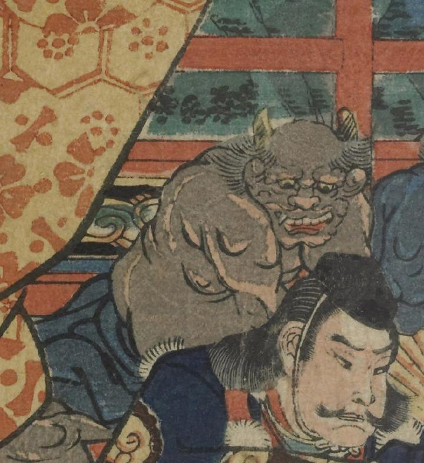

2本の角を持つ茶色い肌の鬼。口をあけて、源頼光の方を見ている。下半身には青い布のようなものを巻いている。
著作者：一寿齋芳員（歌川芳員）／出典：親書誌：U426_nichibunken_0088：源頼光大江山入之圖；ミナモトライコウオオエヤマイリノズ／日付：2007／資源識別子：U426_nichibunken_0088_0002_0007
Copyright (c)2010- International Research Center for Japanese Studies, Kyoto, Japan. All rights reserved.